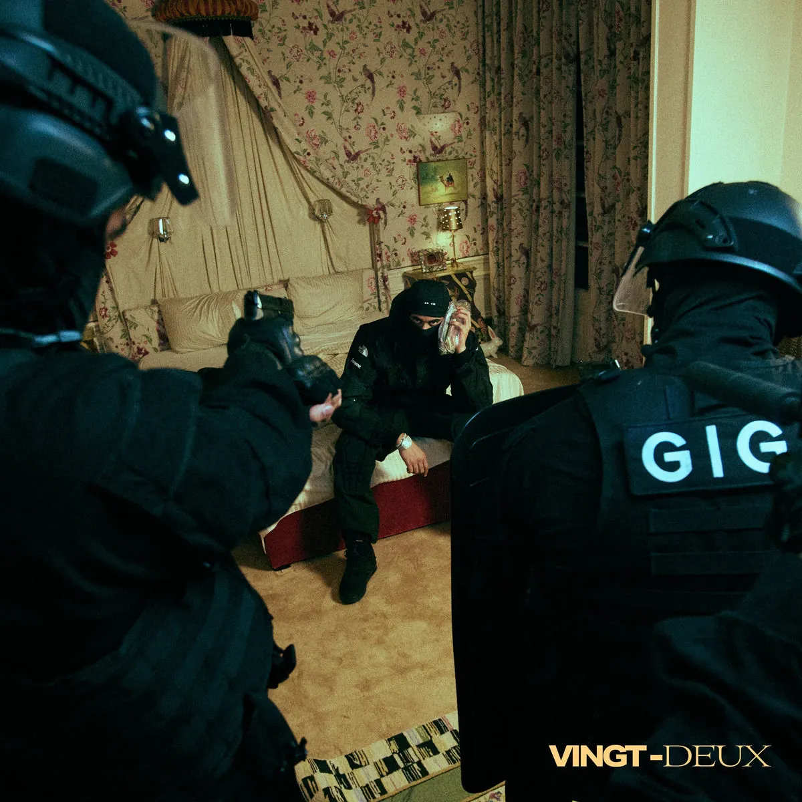

Publié le 12 novembre 2026

En janvier 2023, Ashe 22 publiait son premier album studio solo, Vingt-deux, produit par son propre label 22 Records. Ce disque de 19 morceaux pose un jalon majeur pour la drill lyonnaise.
Membre du collectif Lyonzon, le rappeur avait déjà marqué la scène avec la série des mixtapes Ashe Tape et son projet commun Riyad Sadio avec Freeze Corleone. Pour prolonger l'exploration de cette dynamique régionale, vous pouvez consulter l'agenda des concerts rap à Lyon sur notre site.
Pourquoi l'album Vingt-deux occupe-t-il une place centrale dans son parcours ?
L'album Vingt-deux occupe une position pivot dans la discographie du rappeur lyonnais. Disponible depuis le 20 janvier 2023, cet album studio rassemble 19 titres sur une durée totale de 50 minutes. Le projet matérialise l'indépendance de l'artiste, distribué par son propre label 22 Records.
Après la sortie de son album en duo avec Freeze Corleone, l'artiste revient ici à un format solo ambitieux. Son écriture reste fidèle aux codes de la drill sombre : voix grave, phrasé saccadé et descriptions directes du quotidien. Les instrumentales lourdes renforcent cette ambiance tendue sans chercher le compromis radio.
La présence d'invités internationaux montre l'attrait de son style au-delà des frontières françaises. Le disque marque ainsi la maturité d'une démarche artistique commencée avec le groupe Lyonzon. Ashe 22 affirme une identité commerciale solide sur le marché indépendant.
Quels sont les featurings présents sur le projet Vingt-deux ?
| Titre | Piste | Artiste invité |
|---|---|---|
| Anthracite | Piste 3 | Central Cee |
| Napoli | Piste 6 | Soolking |
| Regard noir | Piste 10 | Rim'K |
| Low | Piste 12 | ElGrandeToto |
| Milli | Piste 15 | Hamza |
| Killu | Piste 18 | Osirus Jack |
Les six featurings du disque reflètent la diversité des connexions établies par le rappeur. La collaboration avec le rappeur britannique Central Cee sur le morceau Anthracite apporte une dimension internationale immédiate. Le duo associe deux approches complémentaires de la drill européenne.
Sur le morceau Napoli, la voix de Soolking apporte des nuances mélodiques qui contrastent avec la sévérité du flow d'Ashe 22. L'apparition de Rim'K sur Regard noir apporte le poids de l'histoire du rap français, tandis qu'Osirus Jack insuffle son style incisif sur Killu.
Les morceaux Low avec ElGrandeToto et Milli avec Hamza complètent cette sélection. Selon la tracklist sur Apple Music, ces invitations permettent d'explorer des atmosphères variées sans dénaturer la couleur d'ensemble du disque.
Comment la production sonore structure-t-elle le projet ?
L'album s'ouvre sur une introduction instrumentale et se conclut par une outro symétrique. Ce découpage encadre 17 morceaux aux ambiances denses. Des titres comme NBA, Cookies ou Raqqa affichent une identité rythmique lourde et sans fioritures.
Les producteurs sollicités sur l'album livrent des compositions sur mesure. Les basses profondes et les nappes synthétiques sombres dominent l'ensemble de l'écoute. Ce choix artistique maintient une tension constante du premier au dernier titre.
La rigueur de cette réalisation permet à 22 Records d'affirmer son autonomie artistique. Ashe 22 démontre sa capacité à construire un album studio ambitieux, fidèle aux origines de la trap et de la drill underground.
Sources